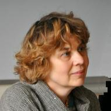

Исследования шугнанского языка
Это сайт исследовательского проекта, посвященного документации и описанию шугнанского языка.
Шугнанский язык относится к восточноиранской группе индоевропейской семьи и входит в ареальную группу памирских языков. Шугнанский язык распространен в Горно-Бадахшанской Автономной области (Таджикистан), а также в Афганском Бадахшане (Афганистан). Число носителей оценивается в 80 000 – 100 000 человек. Кроме собственно шугнанского, выделяют также баджувский и шахдаринский диалекты. В Таджикистане большинство шугнанцев владеет несколькими языками, а именно таджикским, который является официальным в ГБАО и на котором ведется преподавание в школах и университетах, а также русским, который преподается в школе.
Основная цель проекта — создание корпуса текстов на шугнанском языке и корпусного описания грамматики. Кроме того, создается электронная словарная база данных.
В 2018 году состоялась первая шугнанская экспедиция: участники проживали и работали в городе Хороге, записывали устные тексты для создания корпуса в кишлаках Нишусп, Дашт, Парзудч и Миденшор. На данный момент длительность записей в корпусе звучащей речи составляет один час. Участники проекта также занимались грамматическими и лексическими исследованиями, такими как редупликация и ассоциативная множественность, квантификаторы со значением ‘много’, глаголы падения. На сайте находится корпус шугнанских текстов, публикации проекта, информация об участниках и консультантах, а также обширный список литературы о шугнанском языке.
Корпус шугнанского языка
Under construction.Участники проекта
-
Плунгян Владимир Александрович
Институт русского языка им. В. В. Виноградова РАН (ИРЯ РАН), Москва
Институт языкознания РАН (ИЯз РАН), Москва
Московский государственный университет имени М. В. Ломоносова (МГУ), Москва
ruslang.academia.edu/VladimirPlungian
-

Рахилина Екатерина Владимировна
Национальный исследовательский университет “Высшая школа экономики” (НИУ ВШЭ), Москва
Институт русского языка им. В. В. Виноградова РАН (ИРЯ РАН), Москва
hse-ru.academia.edu/EkaterinaRakhilina
-

Ронько Роман Витальевич
Национальный исследовательский университет “Высшая школа экономики” (НИУ ВШЭ), Москва
Институт русского языка им. В. В. Виноградова РАН (ИРЯ РАН), Москва
scopus.academia.edu/RomanRonko
Елизавета Востокова
Степан Михайлов, Высшая школа экономики, Москва
Виолетта Иванова, Высшая школа экономики, Москва
Дарья Чистякова, Высшая школа экономики, Москва
Александр Сергиенко, Высшая школа экономики, Москва
Евгения Слепак, Высшая школа экономики, Москва
Дарья Кошелева
Евгения Мурзинова
Евгений Можаев
Консультанты
Under construction.Публикации проекта
На этой странице представлен список публикаций участников проекта и материалы конференций.
Kosheleva D., Mozhaev E., Murzinova E., Sarkisov I., Vostokova E., Zakirova A. Towards the documentation of Shughni language: building online dictionary and corpus. Poster section at ICIL 7, 28-30 August 2017, Moscow.
Under construction.